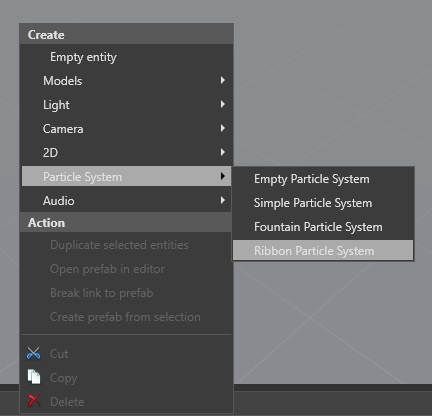
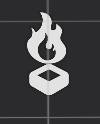

Create particles
Beginner Artist Programmer
To create a particle system, right-click the scene or Entity Tree, select Particle System, and choose a preset (Empty, Simple, Fountain, or Ribbon).

Game Studio creates an entity with a Transform component and a Particle System component with your chosen preset. Particle entities are represented with a flame icon.

Alternatively, you can add a particle component to an existing entity. With the entity selected, in the Property Grid, click Add component and select Particle System.

Game Studio adds an empty particle system to the entity.
Transform component
All entities have a transform component. Some particle elements ignore some elements of the transform component, such as rotation or scaling. For example, the gravity force shouldn't depend on the rotation of the particle system, and always ignores rotation; however, fountain particle systems inherit the location for the purposes of initial particle velocity.
Only uniform scaling is supported. If you have a non-uniform scale on the transform component, only the X axis is used.
If you want two particle systems to share a transform component, create two particle system entities and make one a child of the other.
Particle component properties
With a particle system entity selected, you can edit its properties in the Property Grid, just like any other entity.

| Property | Description |
|---|---|
| Editor control | This changes how Game Studio displays particles while you work on the scene. You can play, pause, and stop the particle system. You can also reset the particle effect at set intervals, which is useful for previewing one-shot effects. The editor controls don't affect how particles are displayed at runtime. |
| Warm-up time | If you set the warm-up time to a value greater than 0, the particle appears as if it's already active when it appears. This value is in seconds. For example, if you set the warm-up time to 1, the particle effect appears as if it has already been active for 1 second when it appears. This is useful, for example, if you set a fire effect warm-up time to 0, the fire appears to ignite as soon as it's rendered. If you want the fire to appear as if it's already ignited when it's rendered, increase the warm-up time. |
| Speed scale | Controls the speed of the particle effect. |
| Culling AABB | This creates an axis-aligned bounding box (AABB) around the particle effect. If the bounding box isn't in the camera view, Stride doesn't render the particle effect. This is useful for culling and optimization. Rotated AABB sets box shape in XYZ co-ordinates. Uniform AABB creates a cube of the scale you specify (in world units). To view the AABB in the Scene Editor, select Debug Draw. |
| Emitters | The emitters the particle system contains. The emitters are updated and drawn in the order they appear in the list, and can be re-ordered. For more information, see Emitters. |